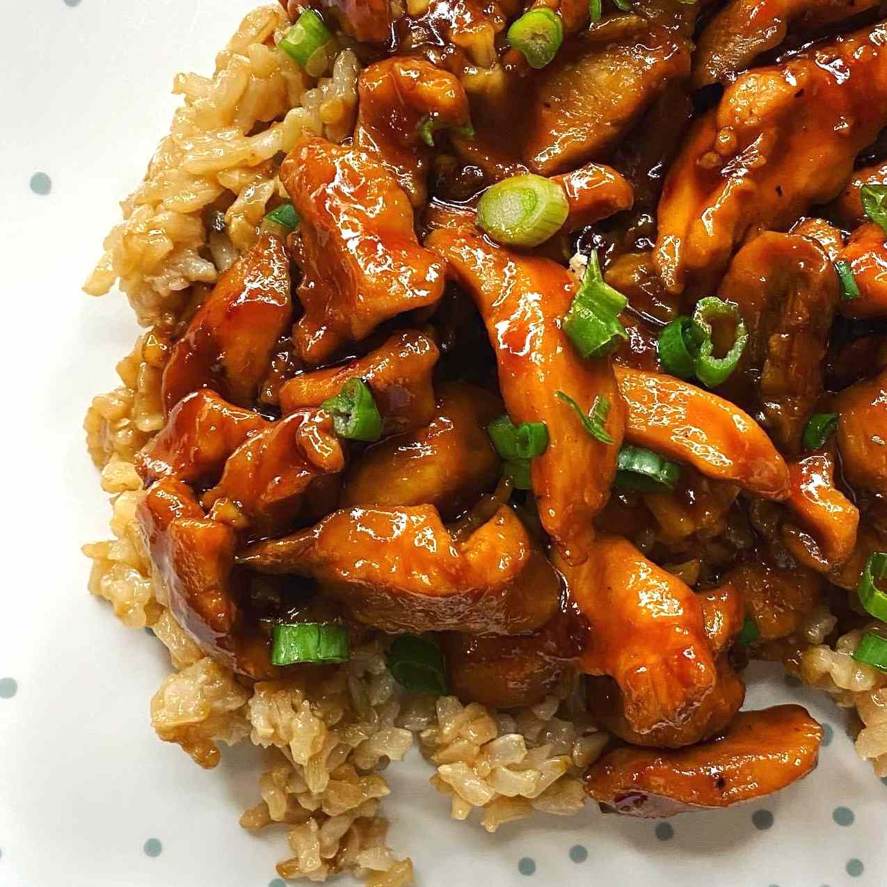

Mama's Asian Chicken and Rice

Asian Chicken and Rice
This Asian chicken and rice bowl features juicy shredded chicken tossed in a savory blend of soy sauce, garlic, and ginger, served over warm rice and fresh vegetables.
The mix of sweet, salty, and aromatic flavors makes it a comforting dish that’s both simple to prepare and full of depth.
Ingredients:
- ⅓ cup warm water
- ¼ cup packed brown sugar
- 2 tablespoons orange juice
- 2 tablespoons soy sauce
- 1/4 cup soy sauce
- 2 tablespoons ketchup
- 1 tablespoon white vinegar
- 4 cloves garlic, minced
- ½ teaspoon crushed red pepper flakes
- ¼ teaspoon Chinese five-spice powder
- 1 teaspoon grated orange peel
- 2 tablespoons olive oil
- 1 ½ pounds skinless, boneless chicken breast halves, cubed
- 2 cups water
- 1 cup uncooked white rice
- 2 teaspoons cornstarch
- 2 tablespoons cold water
- chopped green onions for garnish
Home